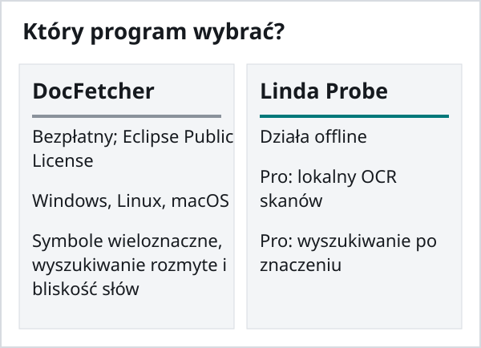
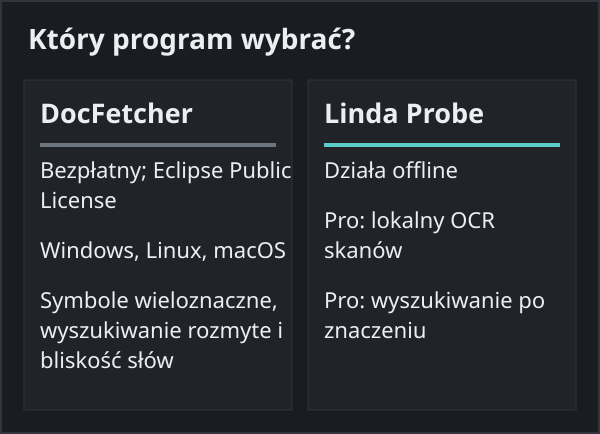

Linda Probe czy DocFetcher
Oba programy przeszukują tekst w dokumentach na Twoim komputerze. Pasują do różnych osób i dla części z nich lepszy będzie DocFetcher. Porównanie opiera się na publicznej stronie DocFetcher według stanu na 30 października 2026 roku.
Wybierz DocFetcher, jeśli
Chcesz otwartego kodu (Eclipse Public License), pracujesz także na Linuksie lub macOS albo zależy Ci na symbolach wieloznacznych, wyszukiwaniu rozmytym i wyszukiwaniu według bliskości słów. Autorzy sprzedają też komercyjne edycje DocFetcher Pro i DocFetcher Server.
Wybierz Linda Probe, jeśli
Pracujesz na Windows i masz w folderach skany PDF albo często pamiętasz, o czym był dokument, ale nie dokładne słowa. Probe Pro odczytuje skany za pomocą OCR na Twoim komputerze, szuka po znaczeniu i znajduje zdjęcia po opisie lub wzorze. Opis DocFetcher nie wymienia wbudowanego OCR ani wyszukiwania według znaczenia; nie testowaliśmy tych możliwości.


Czego nie ma w Linda Probe
Kod jest zamknięty, a program działa tylko na Windows 10 i 11. Wersja bezpłatna obejmuje tylko nazwy i dokładne słowa. OCR i wyszukiwanie według znaczenia wymagają Probe Pro, aktywowanego płatnym lub podarunkowym kluczem licencyjnym. Instalator z GitHuba nie ma jeszcze podpisu cyfrowego, więc Windows SmartScreen może wyświetlić ostrzeżenie: sprawdź sumę SHA-256 na stronie wydania i wybierz „Więcej informacji” → „Uruchom mimo to”. Wersja z Microsoft Store jest podpisana przez Microsoft; kompilacja z GitHuba jest często nowsza. W przypadku słabych skanów i pisma odręcznego OCR popełnia błędy.

Cena
Linda Probe Free jest przeznaczony do osobistego, niekomercyjnego użytku. Probe Pro Personal kosztuje 10 USD jednorazowo dla jednego wskazanego użytkownika na maksymalnie 3 urządzeniach; Team: 30 USD jednorazowo dla maksymalnie 10 wskazanych użytkowników na 20 urządzeniach. Licencje obejmują zakupioną wersję i poprawki; nowe główne wersje lub modele mogą wymagać opłaty. Organization kosztuje 500 USD rocznie dla jednej organizacji w jednej lokalizacji, na maksymalnie 200 urządzeniach, i odnawia się automatycznie do anulowania. Podatki i kwota końcowa są widoczne przed płatnością. Dla Personal i Team można poprosić o pełny zwrot w ciągu 14 dni.
DocFetcher jest bezpłatny i ma otwarty kod na licencji Eclipse Public License. DocFetcher Pro i DocFetcher Server są osobnymi produktami komercyjnymi.